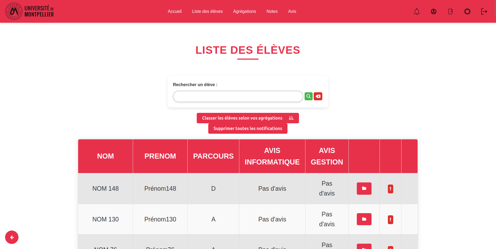
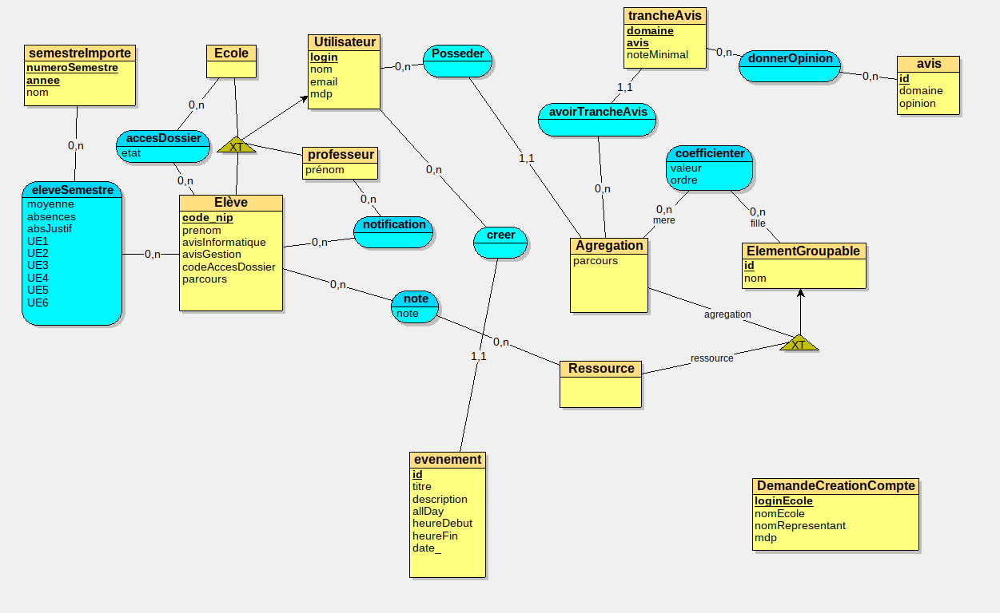
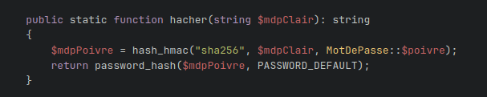
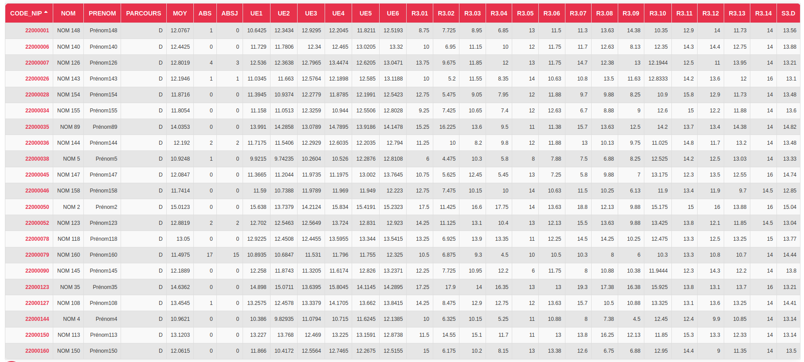
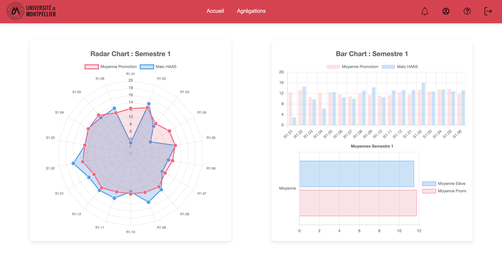
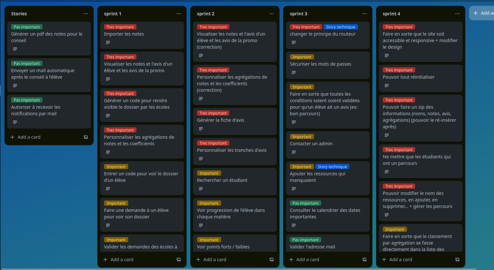

Qu'est-ce que Sconote ?
Le projet Sconote est un site intranet dont le but principal est de permettre aux professeurs du BUT Informatique de l'IUT de Montpellier d'automatiser la génération d'avis de poursuite d'étude. Le site doit également permettre aux différentes écoles recrutant les diplômés du BUT, ainsi qu'aux élèves concernés, d'accéder aux dossiers. Le site web a été développé avec les langages de programmation PHP, HTML et CSS. Il utilise le serveur de base de données MySQL.
Les compétences
1. Développer — concevoir, coder, tester et intégrer une solution informatique pour un client
-
Conception
Analyse des besoins des professeurs, des écoles et des élèves, ainsi que la définition des fonctionnalités clés comme la génération automatique d'avis et l'accès aux dossiers.
-
Codage
Réalisation du site en PHP, HTML, CSS, et utilisation de MySQL pour la gestion des données.
-
Tests et intégration
Validation des fonctionnalités principales (génération d'avis, gestion des utilisateurs) et correction des anomalies détectées pour garantir une expérience fluide.
2. Proposer des applications informatiques optimisées
-
Performance
Requêtes SQL optimisées pour réduire le temps d'exécution, même en cas de forte utilisation.
-
Architecture
Architecture légère pour minimiser la consommation des ressources.
-
Fiabilité
Conception fiable des fonctionnalités afin d'assurer précision et efficacité.
3. Installer, configurer, maintenir et optimiser un système informatique
-
Base de données
Configuration de la base de données MySQL pour gérer les données des étudiants et utilisateurs.
-
Sécurité
Mise en place d'un environnement sécurisé et fonctionnel sur un intranet.
-
Maintenance
Maintenance et tests pour garantir une disponibilité optimale du système.
Les apprentissages critiques
AC24.01 | Optimiser les modèles de données de l'entreprise
Niveau de maîtrise : acquisDans la SAE nous devions faire en sorte de pouvoir créer des agrégations qui permettaient de regrouper des matières. Mais de plus il était possible de regrouper à l'intérieur d'une agrégation d'autres agrégations.
AC24.02 | Assurer la sécurité des données (intégrité et confidentialité)
CE3.01 | en sécurisant le système d'information
Niveau de maîtrise : acquisJ'ai mis en place un système de connexion sécurisé pour les utilisateurs du site. Les mots de passe sont cryptés dans la base de données pour garantir la confidentialité des informations.
AC24.03 | Organiser la restitution de données à travers la programmation et la visualisation
Niveau de maîtrise : acquisInitialement les notes des élèves étaient inséré dans la base de données par un fichier CSV. J'ai mis en place un système de visualisation des notes des élèves sous forme de tableau par semestre. Cela permet aux enseignants de trier les élèves par notes et de voir les moyennes par semestre.
AC24.04 | Manipuler des données hétérogènes
Niveau de maîtrise : acquisCe projet impliquait de manipuler des données variés allant des notes des élèves, agrégations aux système de configuration des accès aux dossiers pour les écoles
AC25.02 | Formaliser les besoins du client et de l'utilisateur
Niveau de maîtrise : acquisDans ce projet, nous étions en équipe de 5 et avions un scrum master et un product owner, le rôle de ce product owner était de faire l'intermédiaire entre le client et l'équipe de développement, chose que nous avons fait puis mis dans notre product backlog pour regrouper les fonctionnalités (stories) par ordre d'importance.
AC25.03 | Identifier les critères de faisabilité d'un projet informatique
Niveau de maîtrise : acquisAvant de débuter le développement, nous avons réalisé une étude de faisabilité complète pour évaluer la viabilité du projet Sconote :
-
Faisabilité technique
Évaluation des compétences de l'équipe en PHP/MySQL et identification des besoins en formation complémentaire pour certaines fonctionnalités avancées.
-
Faisabilité temporelle
Estimation du temps nécessaire pour développer chaque fonctionnalité et vérification de la compatibilité avec les délais imposés par le calendrier académique.
-
Faisabilité organisationnelle
Analyse de la disponibilité des membres de l'équipe et mise en place d'une répartition équilibrée des tâches en fonction des compétences de chacun.
-
Priorisation des fonctionnalités
Identification des fonctionnalités essentielles (MVP) et des fonctionnalités secondaires qui pourraient être reportées en cas de contraintes temporelles.
Cette analyse préalable nous a permis d'identifier les risques potentiels et de mettre en place des stratégies d'atténuation, garantissant ainsi la livraison d'un produit fonctionnel dans les délais impartis.
AC25.04 | Définir et mettre en œuvre une démarche de suivi de projet
Niveau de maîtrise : acquisPour ce projet, nous avons mis en place une méthodologie Agile avec des sprints de deux semaines. J'ai participé activement au suivi du projet en :
-
Planification des sprints
Définition des objectifs réalisables pour chaque sprint en fonction des priorités du product backlog.
-
Daily stand-up meetings
Participation aux réunions quotidiennes pour discuter de l'avancement, des blocages et des prochaines étapes.
-
Rétrospectives
Analyse de ce qui a bien fonctionné et des points à améliorer à la fin de chaque sprint pour optimiser notre processus de développement.
Cette démarche structurée nous a permis de livrer régulièrement des fonctionnalités opérationnelles, de nous adapter aux retours des utilisateurs et de maintenir une visibilité constante sur l'avancement du projet.